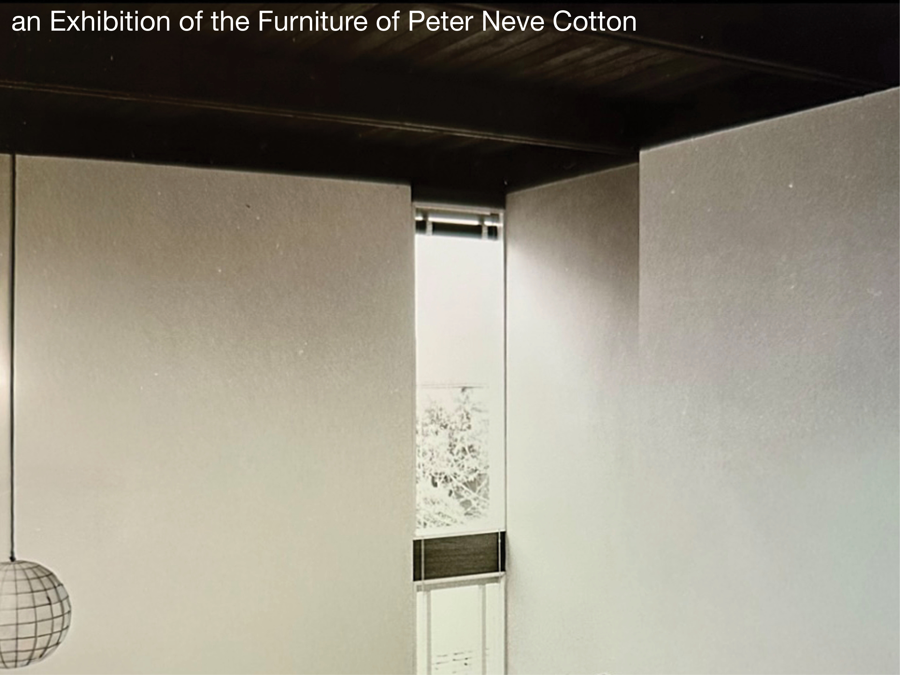

Peter Neve Cotton
Curated by Patrick Rollins, Wentworth Villa Architectural Heritage Museum. May 2026

This exhibition focuses on the furniture design and manufacturing practice of Peter Neve Cotton (1918–1978), examining the Perpetua line and related domestic works as a sustained contribution to postwar West Coast design culture. Produced primarily in the early 1950s through his short-lived Perpetua Furniture enterprise, these works translate architectural thinking into furniture-scale production, balancing material economy, craft, and industrial ambition.
Drawing on archival documents and photographs from the UVic Maltwood Gallery, UBC Archives, and the BC Archives, alongside original drawings, blueprints, and examples or reproductions of Perpetua furniture, the exhibition situates Cotton’s work within the cultural and economic constraints of the postwar period, where experimentation in material, manufacture, and use remained closely tied to everyday domestic life.
Status: In Development. Opening May 2026